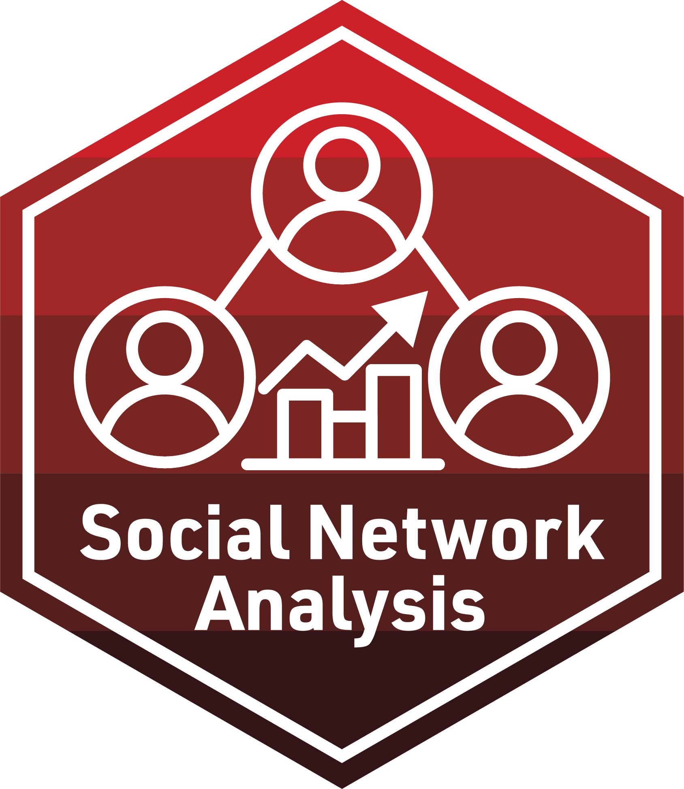

Webinar Example

Welcome to An Introduction to Social Network Analysis and Education Research: Core Concepts and Applications with R! This webinar is not only part of the 2023 AERA Virtual Research Learning Series, but part of the broader work of the Learning Analytics in STEM Education Research (LASER) Institute, a professional development program for early and mid-career researchers funded by the National Science Foundation (ECR: BCSER). To help you prepare for our workshop this Thursday, August 10, 2023, from 1:00pm to 5:00pm (EST), provided below is some information about the organizational aspects of the workshop as well as the technical components you will need to fully participate.
Overview
This workshop is designed to introduce education researchers with little or no background in SNA to social network theory, examples of network analysis in educational contexts, and applied experience analyzing real-world data sets. To support scholars’ conceptual understanding of SNA as both a theoretical perspective and an analytical method, the instructors will provide short presentations and facilitate peer discussion on topics ranging from broad applications of SNA in educational contexts to specific approaches for data collection and storage.
This course will also provide you with applied experience analyzing network data through code-alongs and interactive case studies that use widely adopted tools (e.g., R, RStudio, and GitHub) and demonstrate common techniques (e.g, network visualization, measurement, and modeling). Collectively, these activities will help you both appreciate and experience how SNA can be used to understand and improve student learning and the contexts in which learning occurs.
Agenda & Slides
- 1:00 - 1:50 Introduction & Overview
- 1:50 - 2:00 Break
- 2:00 - 3:00 Lab 1: SNA for Newbies
- 3:00 - 3:20 Break
- 3:20 - 4:00 Lab 1: Case Study
- 4:00 - 5:00 Lab 2: Management & Measurement
- 5:00 - 5:30 Dismiss/Break
- 5:30 - 6:00 Afterparty!
LASER Institute Toolkit
Posit Cloud
For our broader LASER Institute program and for this workshop as well, we will make extensive use of Posit Cloud (https://posit.co/products/cloud/cloud/). Posit Cloud lets you access Posit’s powerful set of data science tools like the RStudio IDE (https://posit.co/products/open-source/rstudio), an integrated development environment (IDE) for R and Python that includes a console and syntax-highlighting editor, as well as tools for plotting, history, debugging, and workspace management. Since Posit Cloud is accessed right in your browser, there is no installation or complex configuration required.
Prior to the workshop, you will need to register for a free Posit Cloud account at: https://login.posit.cloud/register.
AERA SNA Workshop 2023 Workspace
During the workshop, you will need to access our AERA SNA Workshop 2023, where we will host the network-analysis RStudio project and instructional materials it contains. To access this workspace, use the following link: go.ncsu.edu/laser-learner. RStudio projects make it straightforward to divide your work into multiple contexts, each with their own working directory, workspace, history, and source documents. To learn more, visit: https://support.posit.co/hc/en-us/articles/200526207-Using-RStudio-Projects.
If you’ve accessed the workspace correctly, you should see something like this:

Posit Primers & Cheat Sheets
To make this most of this workshop it is helpful to have some basic working knowledge of R. If you are new to R, we highly recommend taking advantage of the great resources provided through Posit Cloud for learning R. For example, Posit Recipes (https://posit.cloud/learn/recipes) provide an excellent series of interactive tutorials that range from R fundamentals like basic programming syntax to complex tasks like building interactive data dashboards. Specifically, we strongly encourage you to complete The Basics primer consisting of:
Posit Cheat Sheets (https://posit.cloud/learn/cheat-sheets) also provide handy reference to commonly used packages and their essential functions, including example code for testing them out.
Learn More
Finally, if you are interested in learning more about the LASER Institute and are considering applying for our 2024 cohort, we encourage you to visit our LASER Institute website and the 2023 Welcome Packet.
Take care and we’ll see you all soon!!
Shaun B. Kellogg, North Carolina State University
Oleksandra Poquet, Technical University of Munich
Bodong Chen, University of Pennsylvania
Jeanne M. McClure, North Carolina State University